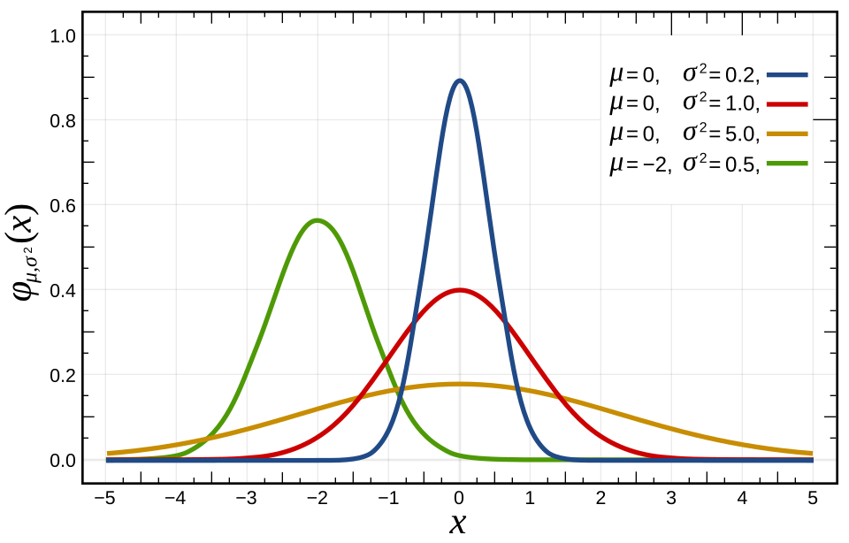
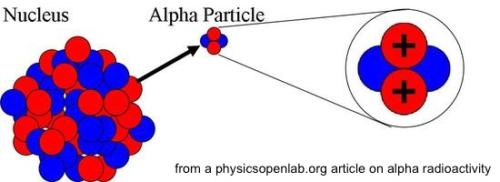

Parameter Estimation: Method of Moments
Introduction
So far, we have estimated population parameters, mostly the mean and variance, but our analysis has been distribution-free. We haven’t made any assumptions other than our population being finite, and our sample being a simple random sample.
Now, we are going to think about parametric models, that is we are going to assume that our populations are infinite, with parametric probability distributions, but unknown parameters.
We would use these when we have some reason to believe that our data is being generated with some particular distribution, and we try to figure out the parameters of the distribution, given a sample from this parametric distribution.
For instance, counts of goals scored in the soccer world cup, or counts of traffic accidents - or counts of cavalry officers in the Prussian army being kicked to death by their horses - these have been shown to follow a Poisson distribution. Later in the course, we will discuss nonparametric models as well, but it is useful to understand parametric models first, as these are widely used.
When we talk about a family of probability distributions we refer to a class of probability distributions indexed by its parameter values. The shape of the distributions can vary (a lot!) depending on the values of the parameters, but the form of the distribution (given by the pdf or cdf) is determined by the class or the family. Many families of probability distributions, such as Poisson, or Gamma, or Gaussian, are determined by some small number of parameters. For the Poisson, you need the parameter \(\lambda\), which would be the average count, for the Gamma distribution you need two parameters, \(\alpha\), called the shape parameter, and \(\lambda\), called the rate parameter. (Some texts will use \(\beta = 1/\lambda\) and call it the scale parameter.) The Gaussian family of distributions depends on two parameters, \(\mu\) and \(\sigma\). This means that when we are estimating the parameters of a probability distribution, given sample data, we might need to estimate a single parameter, or we might need to estimate a vector consisting of two or more parameters.
For example, here is a figure from Wikipedia’s page on the Normal distribution showing the probability density functions for various values of the parameters \(\mu\) and \(\sigma\).

The pdf has the same form for all of the density curves:
\[ f(x; \mu, \sigma) = \frac{1}{\sigma \sqrt{2\pi}}e^{-\frac{1}{2}(\frac{x-\mu}{\sigma})^2} \]
Even when we are interested in only one parameter - the parameter of interest - we may need to estimate the remaining parameters in the model in order to estimate it. In some cases, the parameter of interest itself is a complicated function of the underlying model parameters, as in the following example from (Wasserman 2004):
Example Let \(X_1, X_2, \ldots, X_n \sim \mathcal{N}(\mu, \sigma^2).\) The parameter is a vector \(\mathbf{\theta} = (\mu, \sigma)\) where \(\sigma > 0\). Suppose that \(X_i\) is ther outcome of a blood test and we are interested in \(\tau\), the fraction of the population whose test score is greater than 1. If \(Z \sim \mathcal{N}(0,1)\), then \[ \begin{align*} \tau &= P(X > 1)\\ &= 1-P(X<1)\\ &= 1 - P\left(\frac{X-\mu}{\sigma} > \frac{1-\mu}{\sigma}\right)\\ &= 1 - \Phi\left(\frac{1-\mu}{\sigma}\right)\\ \end{align*} \] Therefore, the parameter of interest is \(\tau = T(\mu, \sigma) = \displaystyle 1 - \Phi\left(\frac{1-\mu}{\sigma}\right)\), where \(T\) denotes that \(\tau\) is a function of \(\mu\) and \(\sigma\).
Example from the text: Fitting the Poisson distribution to emissions of alpha particles

“Records of emissions of alpha particles from radioactive sources show that the number of emissions per unit time is not constant but fluctuates in a seemingly random fashion”.
This is an example of what we will do in this chapter. We will assume some distribution, get a data sample, and then use the data sample to estimate the parameter of the distribution we assumed. Since the underlying rate of emission was assumed to be constant, it was assumed that the emissions followed a Poisson distribution. In fact, for this very reason - that the number of emissions per unit time fluctuate randomly, but there is an underlying constant rate - the Poisson distribution is often used to model radioactive decay. Recall the conditions for using the Poisson distribution to model the number of events in time (or space) are that:
- The underlying rate of events is constant in time (or space),
- The number of events that occur in disjoint intervals are independent, and
- There cannot be multiple events at the same instant.
Researchers observed the radioactive decay of Americium 241 and the consequent emission of alpha particles, recording the time between successive emissions. They recorded 1,207 intervals of 10 seconds each, and counted the number of emissions in each of these intervals.
The table below, reproduced from (Rice 2006) shows emission counts \(n\) in the first column. In the second column is the number of intervals the researchers observed that had \(n\) emissions, for each \(n\) listed. For example, there were 28 10-second intervals observed that had 3 emissions each, 56 intervals that had 4 emissions each, etc. To compute the expected count, we need a value for the Poisson rate \(\lambda\). The observed mean emission rate which was the total number of emissions divided by the total amount of time was recorded to be 0.8392 seconds. We use this observed mean emission rate to compute an estimate for \(\lambda\) in the probability mass function of the Poisson distribution. Now, the 1,207 counts are the 1,207 realizations of a Poisson random variable with rate \(\lambda\), where \(\lambda\) is the expected number of emissions in 10 seconds,making our estimate, \(\hat{\lambda} = 0.8392 \times 10 = 8.392\).
For example, how many intervals do we expect with exactly 4 emissions? Each interval has 4 emissions or not 4 emissions. So the number of intervals out of 1,207 total intervals with exactly 4 emissions is a Binomial random variable, with parameters \(n = 1207\), and \(p = P(\) exactly 4 emissions\()\) = \(\displaystyle \dfrac{\lambda^k e^{-\lambda}}{k!} \approx \dfrac{\hat{\lambda}^k e^{-\hat{\lambda}}}{k!}\). If we plug in \(k=4\) and \(\hat{\lambda} = 8.392\), we get that \(p \approx 0.0468\). Therefore, the expected number of intervals with exactly 4 emissions in \(np = 1207\times 0.0468 = 56.4876\approx 56.5\).
For the first row, since we are combining intervals with exactly 0 or 1 or 2 counts, the Binomial parameter \(p\) is given by \(P(\) exactly 0 OR exactly 1 OR exactly 2 emissions \()\), so we have to add the probabilities of each of these to get \(p\). We can see that the expected counts are not too far off from the observed counts. In chapter 9 we will discuss how to quantify the notion of “not too far off”.
| \(n\) | Observed Number of Intervals | Expected Number of Intervals |
|---|---|---|
| 0-2 | 18 | 12.2 |
| 3 | 28 | 27.0 |
| 4 | 56 | 56.5 |
| 5 | 105 | 94.9 |
| 6 | 126 | 132.7 |
| 7 | 146 | 159.1 |
| 8 | 164 | 166.9 |
| 9 | 161 | 155.6 |
| 10 | 123 | 130.6 |
| 11 | 101 | 99.7 |
| 12 | 74 | 69.7 |
| 13 | 53 | 45.0 |
| 14 | 23 | 27.0 |
| 15 | 15 | 15.1 |
| 16 | 9 | 7.9 |
| 17+ | 5 | 7.1 |
Parameter Estimation
Suppose our population is some parametric distribution with pmf or pdf \(f(x \vert \theta)\), where \(\theta\) is the unknown parameter that we want to estimate.
We obtain an IID sample \(X_1, X_2, \ldots, X_n\) from this distribution, so \(X_i \sim (x \vert \theta)\).
The joint pmf or pdf of \(X_1, X_2, \ldots, X_n\) is given by \(f(x_1, x_2, \ldots, x_n)\). Because this probability depends on \(\theta\), we write the pdf (or pmf, as the case may be), as \(f(x_1, x_2, \ldots, x_n \vert \theta)\).
For simplicity, let’s assume that we have a discrete distribution, so that
\[ \begin{align*} f(x_1, x_2, \ldots, x_n \vert \theta) &= P(X_1 = x_1, X_2 = x_2, \ldots, X_n = x_n)\\ &= P(X_1 = x_1)P(X_2 = x_2)\ldots P(X_n = x_n)\\ &= f(x_1\vert \theta)f(x_2\vert \theta)\ldots f(x_n\vert \theta)\\ &= \prod_{i=1}^n f(x_i\vert \theta) \end{align*} \] - Any estimator of \(\theta\) will be a function of the sample \(X_1, X_2, \ldots, X_n\), which means that the estimator will itself be a random variable. Therefore it will have a probability distribution.
Just like in chapter 7, we call the estimator \(\hat{\theta}\), and its distribution is called the sampling distribution of \(\hat{\theta}\).
We will need to approximate this distribution, since we need an idea of the error of our estimator, which is governed by its standard error \(SE(\hat{\theta})\), that is, we denote the square root of \(\mathrm{Var}(\hat{\theta})\) by \(SE(\hat{\theta})\).
We will study the following two methods:
- Method of moments
- Maximum Likelihood Estimation
- We would like to minimize the standard error of our estimator, so we will choose the estimator whose distribution is most concentrated about the true value \(\theta\). That is, we will choose (from among the unbiased estimators) the estimator with the smallest standard error.
Method of Moments
Let \(\mu_k\) denote the \(k\)th moment of the random variable \(X\). That is, \(\mu_k = E(X^k)\). The first moment is the mean:
\[ \mu_1 = E(X). \]
The second moment isn’t the variance, but we can get the variance from the first and second moments: \[ \mu_2 = E(X^2) \Rightarrow \mathrm{Var}(X) = \mu_2 - \mu_1^2 \]
Now, suppose we have an IID random sample \(X_1, X_2, \ldots, X_n\). Define the \(k\)th sample moment \(\hat{\mu}_k\) by \[ \hat{\mu}_k = \frac{1}{n} \sum_{i =1 }^n X_i^k \] For example, \(\hat{\mu}_1\) is the sample mean \(\overline{X}\). We can use \(\hat{\mu}_k\) as an estimate for \(\mu_k = E(X^k) = E(X^k \vert \theta)\). The method of moments estimates parameters by finding expressions for them in terms of the moments of the lowest possible order, and then plugging in the sample moments into the expression. We usually need as many moments as there are unknown parameter values.
There are 3 steps to this method:
- Find the moments \(E(X^k)\).
- Solve for \(\theta\) in terms of the moments, that is get an expression that looks like \(\theta = h(\mu_1, \mu_2, \ldots, \mu_k)\).
- Plug in the sample moments to get \(\hat{\theta}\), so we get \(\hat{\theta} = h(\hat{\mu}_1, \hat{\mu}_2, \ldots, \hat{\mu}_k)\)
Examples
Example 1
\(X_1, X_2, \ldots, X_n \sim Bernoulli(p)\)
So here, \(\theta = p\)
Check your answer!
Step 1: Find the moments. Note that we have just one parameter, so the first moment should suffice.
\(E(X_i) = p = \theta\).
Step 2: Therefore \(\theta = \mu_1\) and we don’t need any more moments. Now \(\hat{\mu}_1 = \overline{X} = \hat{p}.\)
Step 3: \(\hat{\theta} = \hat{\mu}_1 = \hat{p}.\)
Example 2
\(X_1, X_2, \ldots, X_n \sim Exponential(\lambda)\).
Step 1. \(\mu_1 = E(X_i) = \frac{1}{\lambda}\)
Step 2: Solve for \(\lambda\)
\(\lambda = \dfrac{1}{\mu_1} \Rightarrow \hat{\lambda} = \dfrac{1}{\hat{\mu}_1} = \dfrac{1}{\overline{X}}\)